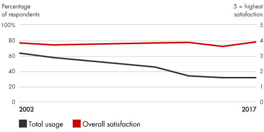
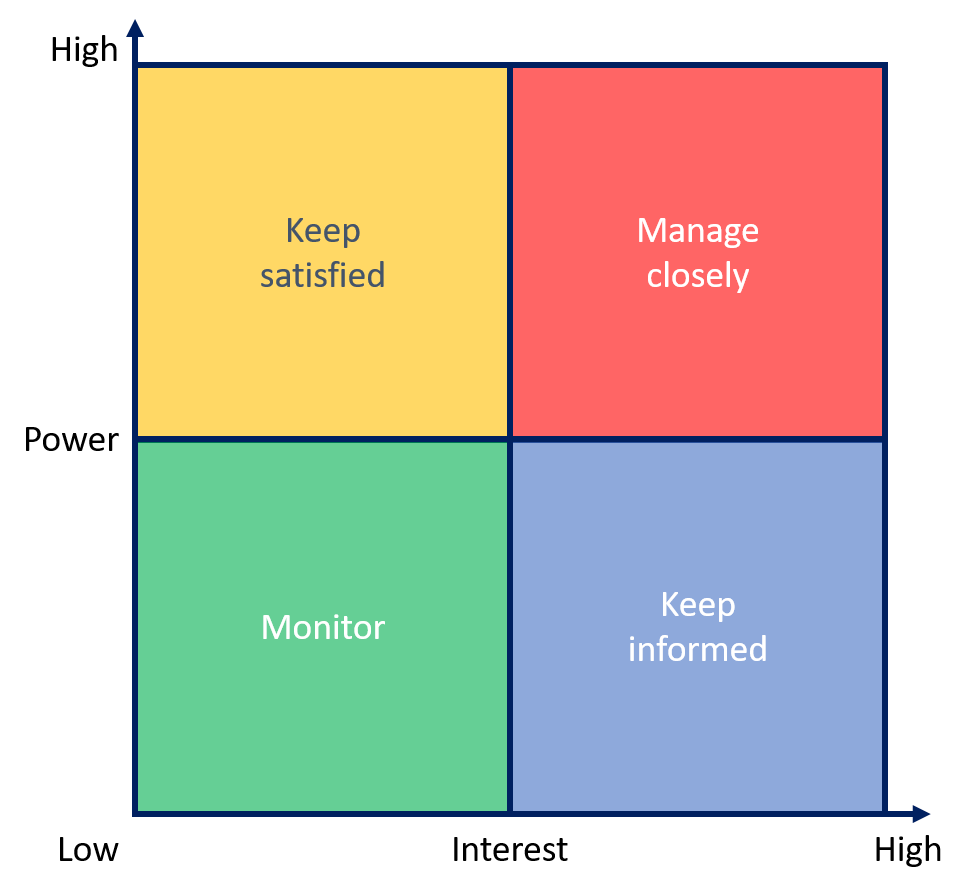

📘معرفی ابزار
برنامههای مدیریت تغییر، شرکتها را قادر میسازند تا بکارگیری فرایندهای جدید برای تحقق منافع تجاری را کنترل کنند. این برنامهها شامل ارایه ایدهها و طرحهای تغییر، خرید و فروش سازمانی، اجرای ابتکارات (تا حد ممکن بصورت یکپارچه) و ایجاد یک مدل تکرارپذیر برای کسب اطمینان از تداوم موفقیت در تغییرات آتی میباشد. برنامه مدیریت تغییر به رهبران این امکان را میدهد تا به موفقیت افراد کمک کنند و نشان دهند کجا و چه زمانی مشکل رخ میدهد و یک استراتژی برای کاهش خطرات و نظارت بر پیشرفت ایجاد میکند.
🆕بهروزرسانی ۱۴۰۵
این بخش در نسخهٔ آنلاین ۱۴۰۵ افزوده شده است. متن اصلی کتاب (آبان ۱۳۹۹) در بخشهای بعد بدون تغییر آمده است.
آمار و شواهد تازه
- مطالعهٔ ۱۲ام Prosci (۲۰۲۳): ۲٬۶۶۸ پاسخدهنده از ۳۸ صنعت و ۱۰۱ کشور؛ یافتهٔ محوری: مدیریت تغییر عالی با موفقیت چندبرابری همبسته است (عنوان خلاصهٔ اجرایی: «۷ برابر»). (منبع: Prosci)
- مدل ADKAR همچنان ستون روش Prosci است و Prosci پژوهش و وبینار مستقلی برای کاربرد آن در پذیرش هوش مصنوعی منتشر کرده است. (منبع: Prosci)
چه چیزی تغییر کرده؟
در دورهٔ حاضر دو چیز تازه است: نخست، «بار تغییر» روی کارکنان بسیار بیشتر شده و باید پورتفوی تغییرات مدیریت شود، نه هر پروژه جدا؛ دوم، پذیرش ابزارهای هوش مصنوعی خود یک برنامهٔ تغییر کامل است (آگاهی، تمایل، دانش، توانایی، تثبیت).
نمونه ابزارها و نرمافزارهای امروزی
نامها صرفاً نمونهاند و توصیه یا تبلیغ تجاری نیستند؛ شرایط دسترسی و تحریمها را برای سازمان خود بررسی کنید.
منابع این بخش
🧩فرآیند اجرا
- تمرکز بر روی نتایج: حفظ یک طرز تفکر هدفمند از طریق ایجاد اهداف مشخص، اهداف غیرقابل مذاکره و طراحی مشوقهای تضمین این اهداف.
- غلبه بر موانع برای تغییر: شناسایی کارمندانی که بیشتر تحتتاثیر قرار میگیرند.
- مدیریت ریسک: تلاش برای پیشبینی، اندازهگیری و مدیریت ریسک.
- ارتباط مستمر و قوی با کارکنان: در زمان تغییر، برای مدیریت واکنشهای نیروی کار لازم است فرکانس و روشهای ارتباطی تغییر کند.
- اطمینان حاصل کنید که پشتیبانی در تمام سازمان تضمین شده است. برای اجازه دادن به حمایت مالی برای رسیدن به تمام سطوح سازمان، چندین پشتیبان برای فراهم نمودن افراد با دسترسی و نفوذ (اسپانسر) جلب کنید.
- سازماندهی مجدد فرآیند تصمیمگیری. ایجاد سیستمی برای شناسایی، ایجاد و اجرای مهمترین تصمیمات.
- نظارت مستمر بر پیشرفت: هر طرح تغییر را دنبال کنید و زیر نظر داشته باشید تا مشخص شود که آیا مسیر برنامه ریزی شده را دنبال میکند یا نه.
💼موارد استفاده در کسبوکار
- اجرای طرحهای استراتژیک اصلی برای انطباق با تغییرات در بازارها، اولویتهای مشتریان، تکنولوژیها یا برنامههای راهبردی رقابتی
- تمرکز بر روی سازمان در هنگام عبور از یک تغییر عمده
- اجرای فرآیندهای جدید مبتکرانه
📈میزان محبوبیت در طی زمان

🧪نمونه ابزار / الگو

ابزارهای مختلفی برای مدیریت تغییرات مورد نیاز است که از جمله آنها میتوان به ماتریس تحلیل ذینفعان اشاره کرد. برای مثال در این ماتریس مشخص میشود که در فرآیند تغییر چگونه باید با گروههای مختلف مواجه شد و تاثیر هر گروه در پیشبرد تغییر چقدر است.
⬇️چکلیست قابلدانلود
چکلیست اجرایی این ابزار را دانلود و در سازمان خود تکمیل کنید. گامها از فرآیند اجرای همین صفحه برداشته شدهاند و ستونهای مسئول، موعد و وضعیت برای پیگیری تیمی خالی گذاشته شده است.
⬇ دانلود چکلیست (Word) · مدیریت تغییرات📚مراجع مطالعه بیشتر
- Bain & Company, Change Management Programs: www.bain.com/insights/management-tools-change-management-programs
- Creately, The Ultimate List of Change Management Tools to Drive Change Like a Pro, https://creately.com/blog/diagrams/change-management-tools-list/
- Axelrod, Richard H. Terms of Engagement: Changing the Way We Change Organizations. 2d ed. Berrett-Koehler Publishers, 2010.
- Clark, Timothy R. EPIC Change: How to Lead Change in the Global Age. Jossey-Bass, 2007.
- Harvard Business Review on Leading Through Change. Harvard Business School Press, 2006.
- HBR’s 10 Must Reads on Change Management. Harvard Business Review Press, 2011.
- Hiatt, Jeffrey, and Timothy Creasey. Change Management: The People Side of Change. 2d ed. Prosci Research, 2012.